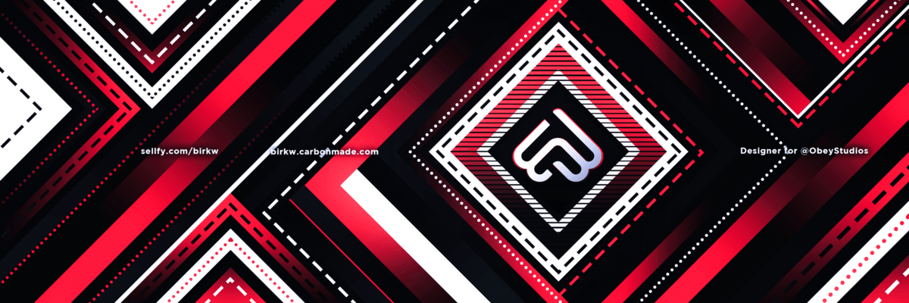

Bannière twitter pour Birk

Cette bannière aux couleurs rouge et noir a été réaliser par mes soins pour un client sur Twitter tout en ayant un jeu de forme qui se répète continuellement. J’ai choisi la couleur rouge puisque dans les réalisations du client, on ressent qu’il est passionné par ce qu’il fait mais qu’il fait ça avec élégance et c’est pourquoi j’ai choisis de prendre une couleur sombre qui est le noir pour contraster et faire ressortir la couleur rouge. Ce jeu de forme est présent afin de montrer qu’il a son style a lui et qu’on retrouve assez souvent dans ses créations.